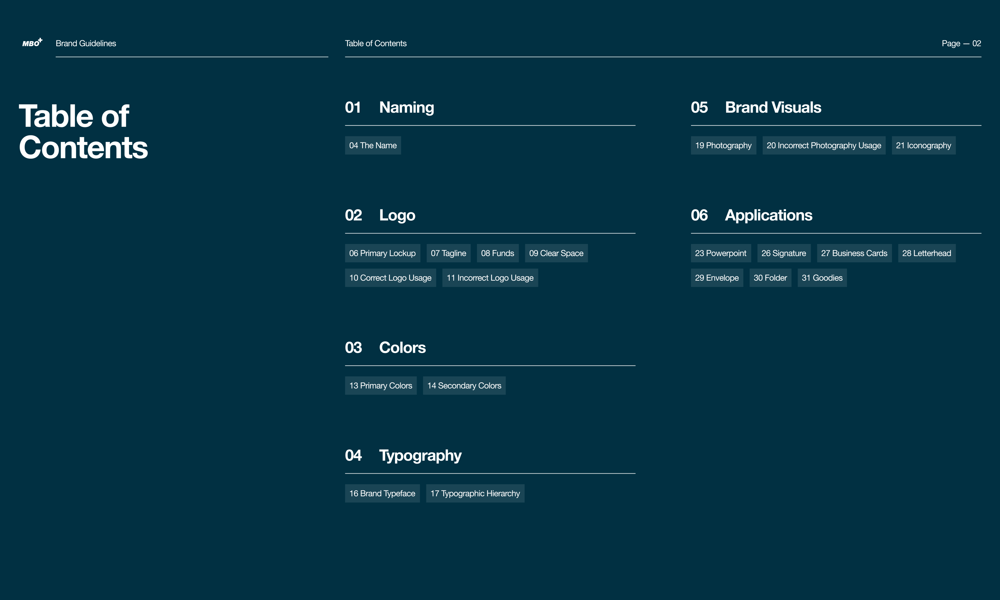
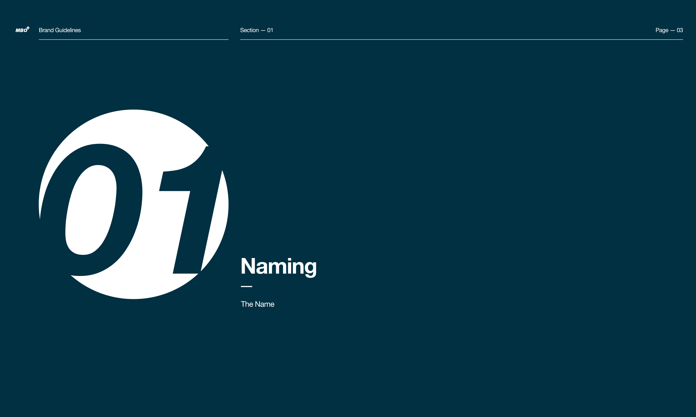
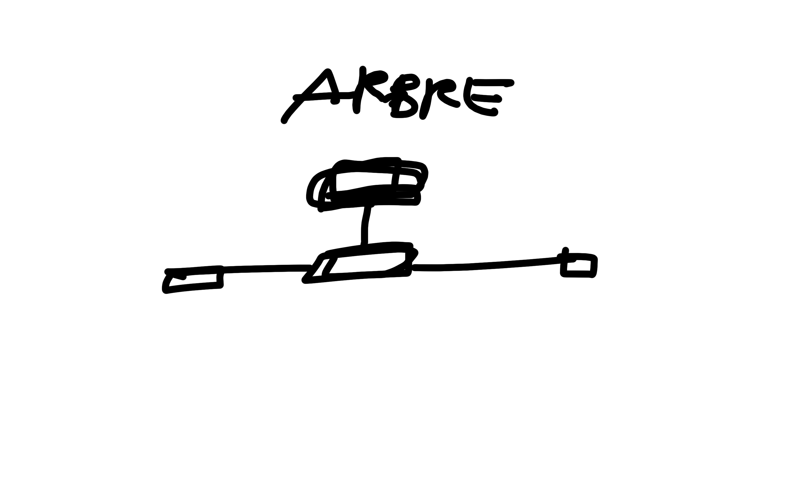
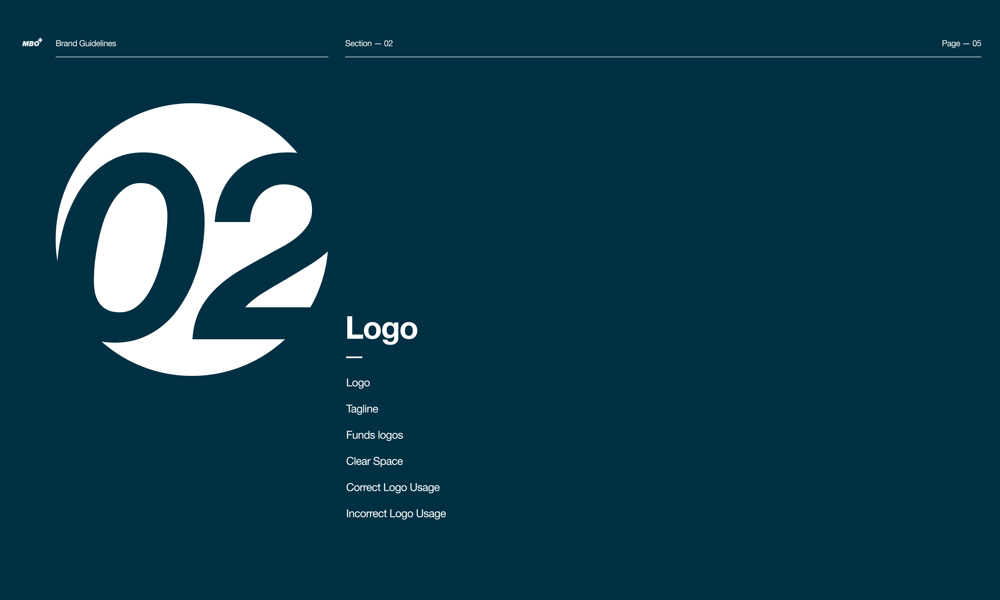
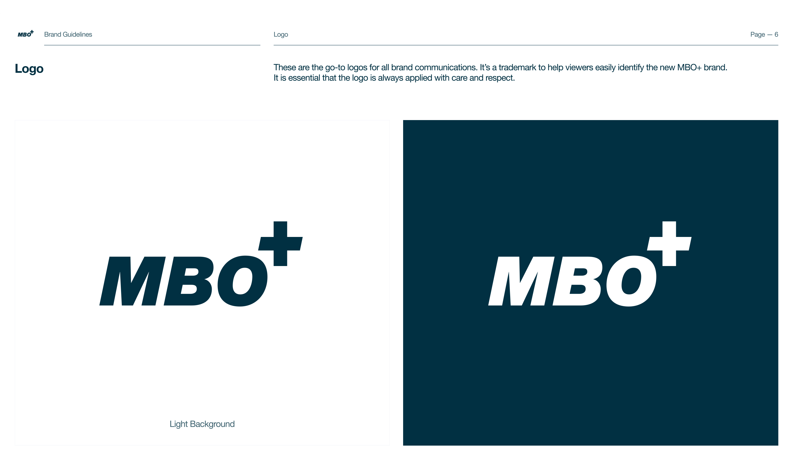
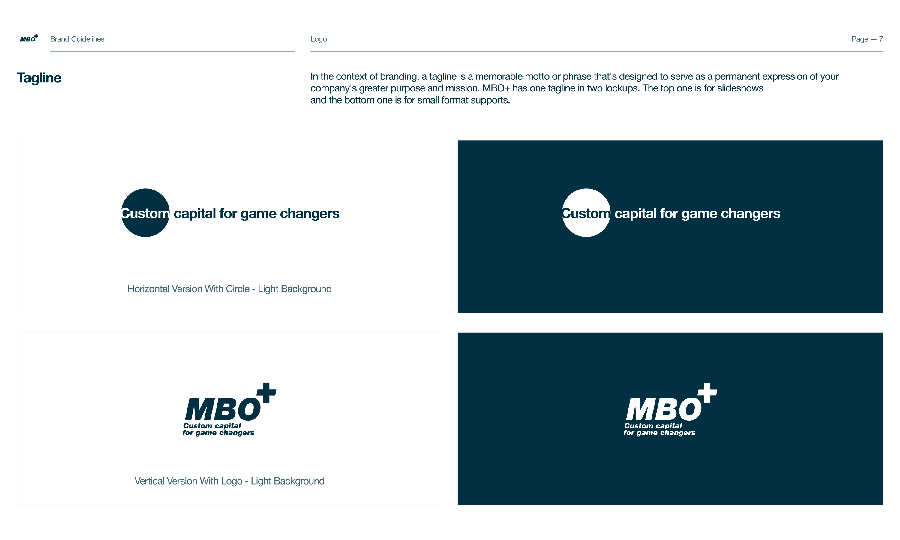
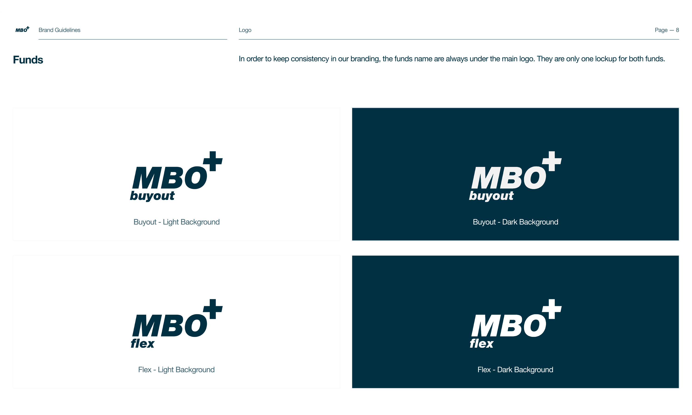
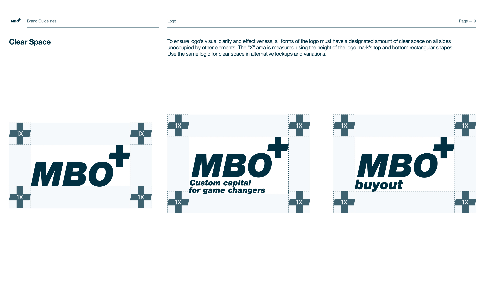

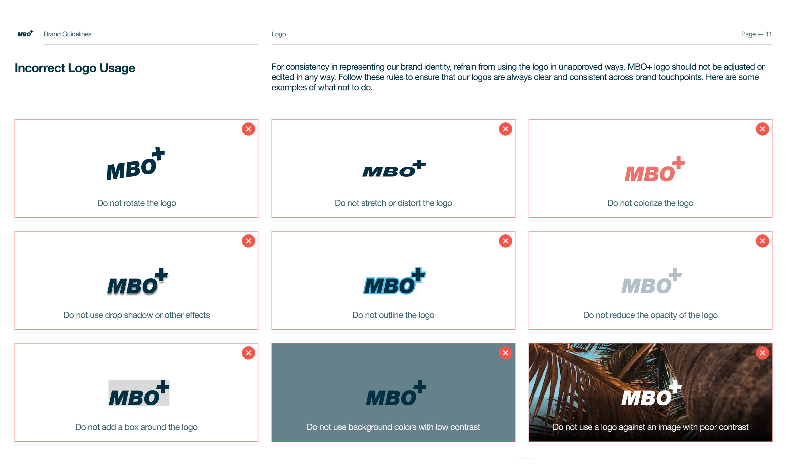
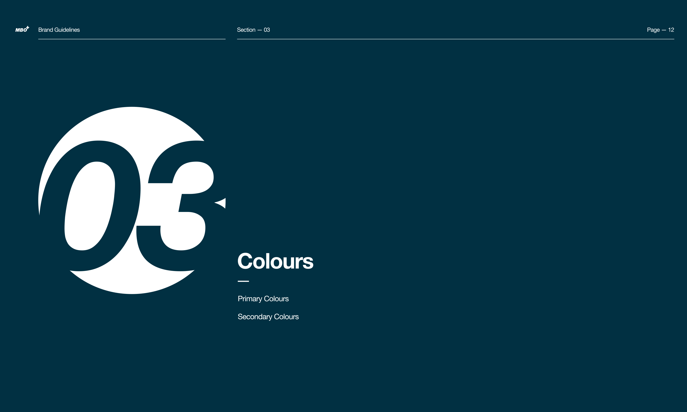
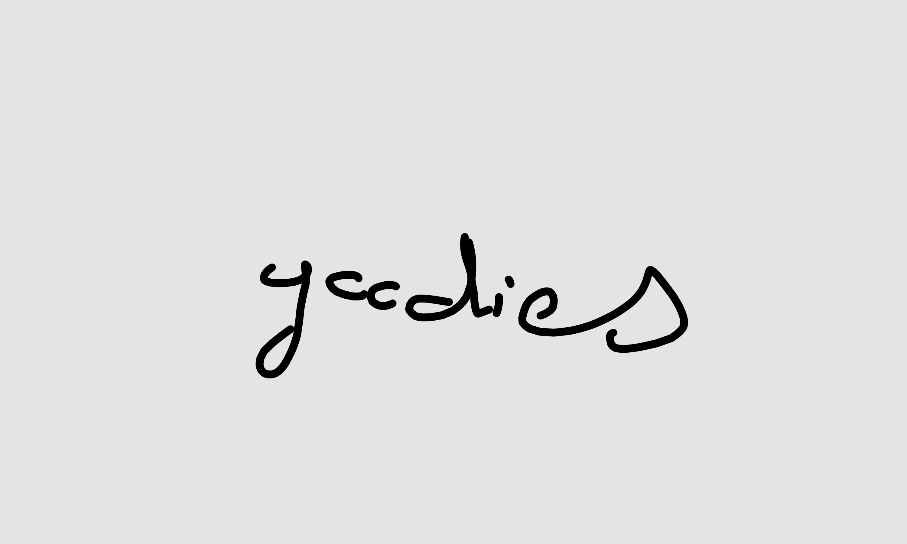
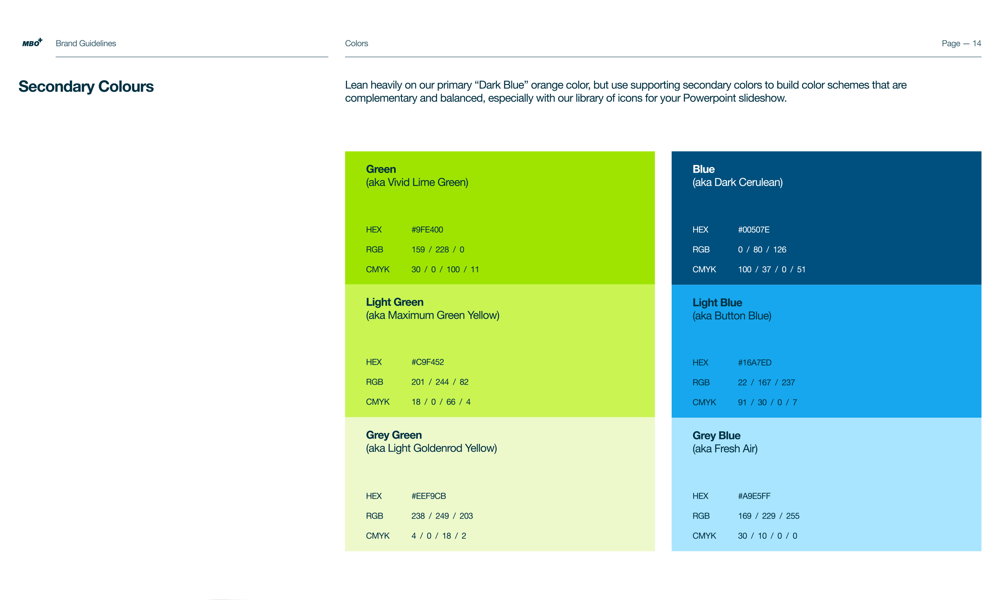
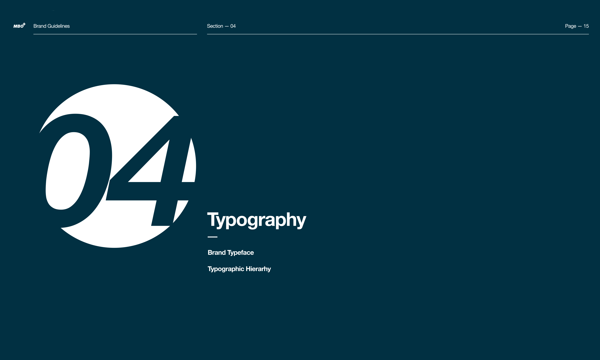
MBO+
Identité Visuelle & UI-UX Design
Custom Capital for Game Changers
Société de capital-investissement basée à Paris, MBO+ est la première plateforme d'investissement PE à guichet unique pour les PME françaises de petite et moyenne capitalisation. Leur objectif est d’investir dans des femmes et des hommes talentueux qui souhaitent bâtir des entreprises pérennes. MBO+ les entoure d’un accompagnement, d’une expertise et d’un savoir-faire qu’ils ne trouveront pas ailleurs et les aide à accroître leur différenciation stratégique et à renforcer leur organisation.
Anciennement MBO&CO
Comment rafraîchir une marque sans effacer un nom connu et reconnu depuis 20 ans ? C'est le défi pour lequel MBO+ m'a contacté après avoir vu mon travail de branding chez INCO Ventures. En collaboration avec leur équipe de communication interne, ma mission était de créer une nouvelle identité de marque afin de révolutionner le secteur traditionnel français du capital-investissement.
Solution Créative
Avant de commencer l'exploration graphique, nous avons également recherché de nouveaux noms. Dans un premier temps, nous avons décidé de conserver l’acronyme de « Management BuyOut ». Ensuite, nous avons abandonné le « &CO » pour « + » qui représente un nouveau MBO amélioré. Le rebranding du logo et du nom nous ont amené à créer également un nouveau slogan : « Custom capital for game changers ». « Custom » est le service sur mesure pour les clients de MBO, « capital » est au cœur de leur expertise et « for game changers » parce qu'ils aident les entrepreneurs qui changent la donne dans leur secteur.
Année
Mars 2023
Read in English 🇬🇧